Getting Started#
Dynatrace Tenant Setup#
You will need a Dynatrace SaaS tenant.
Identify Dynatrace SaaS Tenant#
Make a note of the Dynatrace environment name. This is the first part of the URL. abc123 would be the environment ID for https://abc123.apps.dynatrace.com.
When you copy the url for the tenant, please enter it without the 'apps' part, see examples below:
Production -> https://abc123.live.dynatrace.com
Sprint -> https://abc123.sprint.dynatracelabs.com
For example, if you are using a Dynatrace production tenant it will look like this below, where abc123 would be your your-environment-id.
https://abc123.live.dynatrace.com
⚠️ Again, no apps in the URL! ⚠️
⚠️ Make sure there is no trailing / at the end of the url ⚠️
Enable Node.js Business Event OneAgent Feature#
Open the Settings Classic App.
In the tree select Preferences, then OneAgent features.
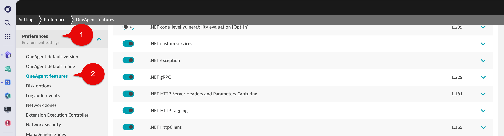
Filter by:
Node.js Business Events
Select the sliders to enabled:
Node.js Business Events [Opt-In]
Instrumentation enabled (change needs a process restart)
Select the Save changes button at the bottom left of the screen.
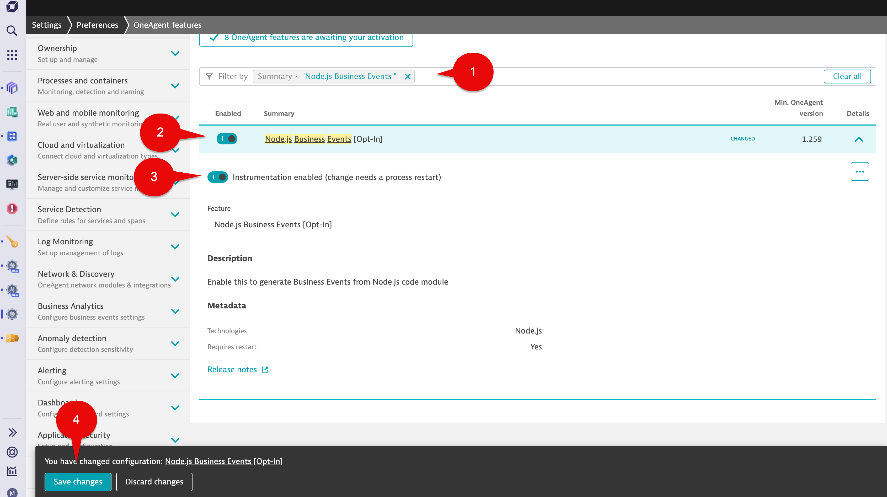
Enable OpenTelemetry OneAgent Features#
Open the Settings Classic App.
In the tree select Preferences, then OneAgent features.
In the Filter by section, use below and hit return.
opentel
Enable all, then expand the Details for each and make sure that second Enabled button is also selected where applicable.
When done, select the Save changes button.
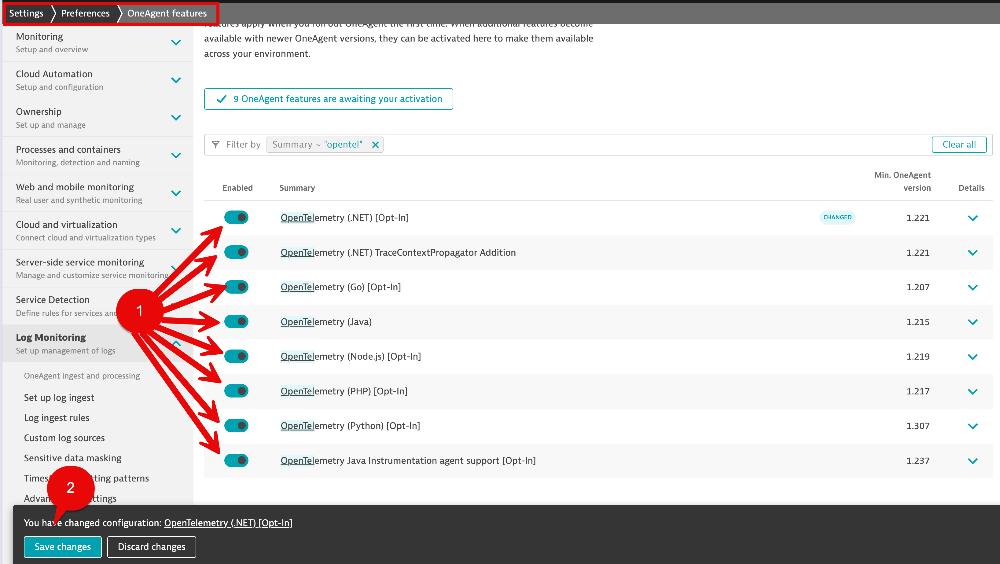
Enable Log Ingestion#
Open the Settings Classic App.
In the tree select Log Monitoring, then Log ingest rules.
Make sure the [Built-in] Ingest all logs rule is enabled.
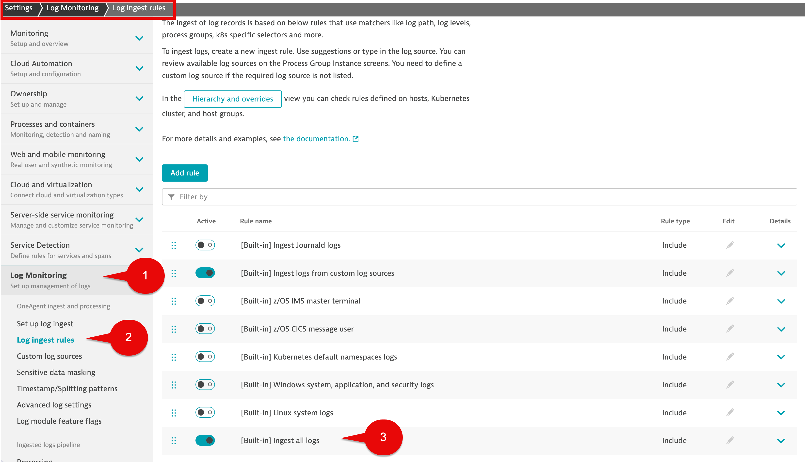
Enable Limit Outbound Connections#
During the hands on exercise we will use a Dynatrace Workflow to post data back to your tenanat via the Business Event API. To do this we need to enable outbound connections for your tenant.
Open the Settings Classic App.
In the tree select Preferences, then Limit outbound connections.
Make sure the Limit outbound connections to endpoints in the allow list is enabled.
In the allow list section your tenant info as shown in below examples:
Production -> abc123.live.dynatrace.com
Sprint -> abc123.sprint.dynatracelabs.com
For example, if you are using a Dynatrace production tenant it will look like this below, where abc123 would be your your-environment-id.
abc123.live.dynatrace.com
Select the Save changes button at the bottom left of the screen.
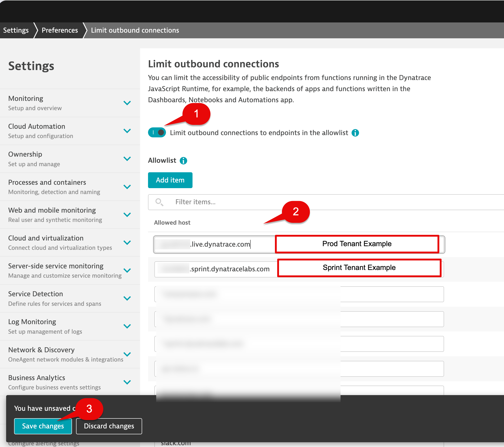
Enable Third-party Vulnerability Analytics#
Open the Settings Classic App.
In the tree select Preferences, then Application Security. then Vulnerability Analytics, then General settings.
In Third-party Vulnerability Analytics tab, select Enable Third-party Vulnerability Analytics slider.
In the Global third-party vulnerability detection control section make sure Monitor is selected in the drop-down list.
In the Technologies section, enable all technologies.
Select the Save changes button at the bottom left of the screen.
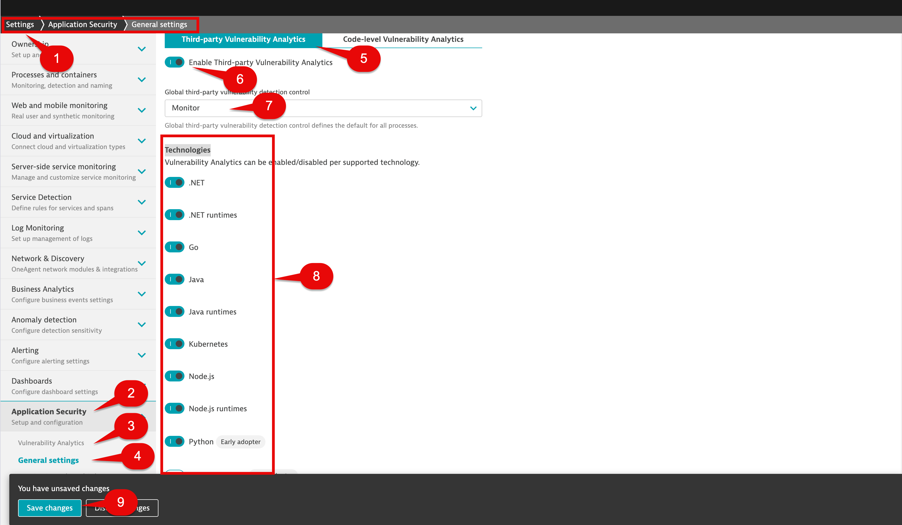
Get the Operator Token and the Ingest Token from the Kubernetes App#
Open the Kubernetes App.
Select the + Add cluster button.
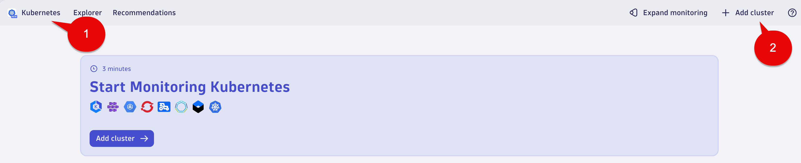
Scroll down to the section Install Dynatrace Operator.
Select the Generate token button for the Dynatrace Operator. Copy and save it to your Notepad.
Select the Generate token button for the Data Ingest Token. Copy and save it to your Notepad.
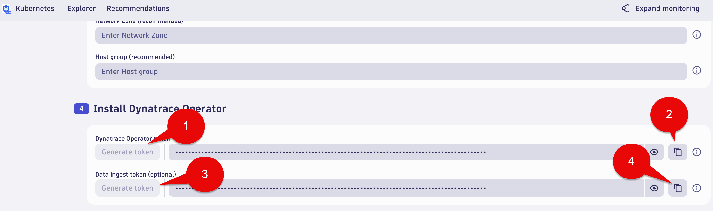
You can close the Kubernetes App, we don't need it, we just needed the tokens.
Create DT Business Event Token#
Open the Access tokens classic app.
Select the Generate new token button.
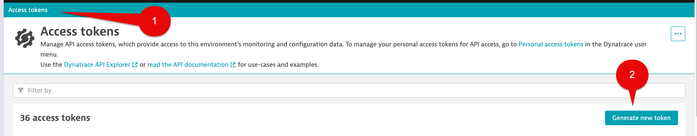
In the Token name section provide a name.
In the Select scopes from the table below section find and select the checkbox for:
Ingest bizevents
Generate token button at the bottom left of the page.
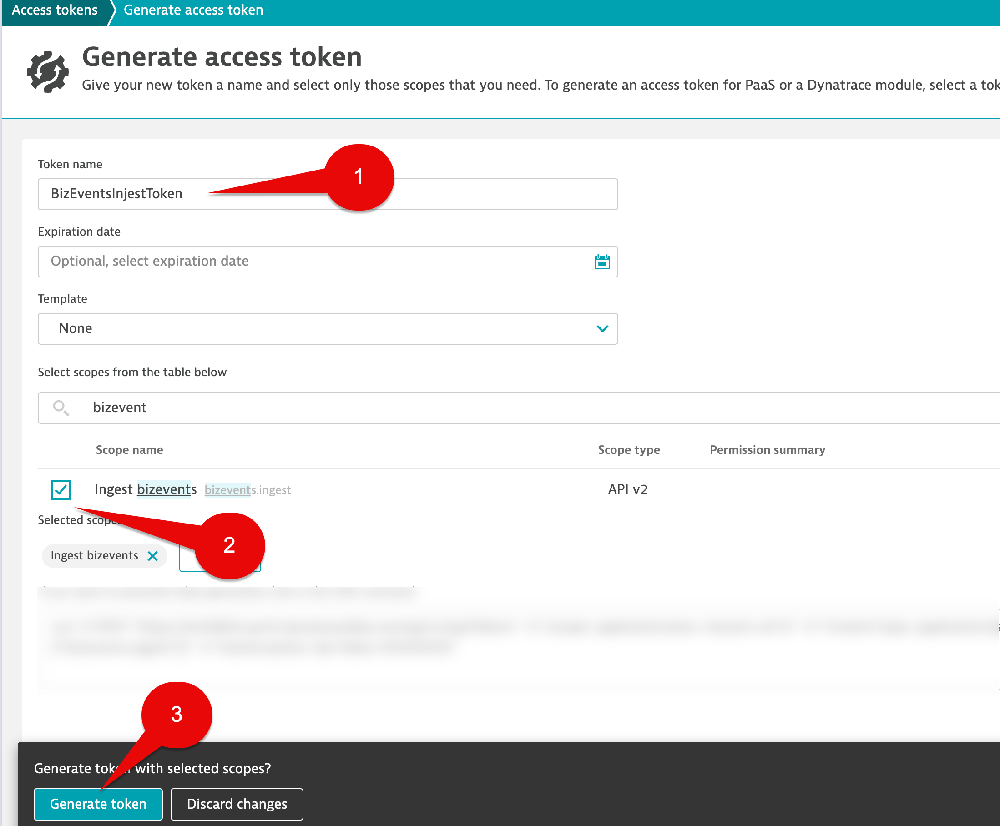
In the next screen, select the Copy button and save the token to your notepad as we will use this later.
Select the Done button.
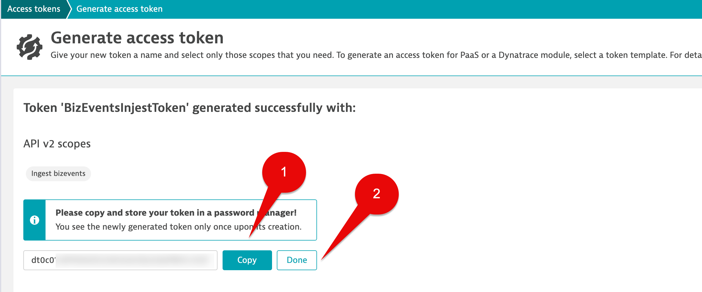
Conclusion#
We have enabled Dynatrace tenant configurations for the following:
1. OneAgent Feature for Node.js Business Events
2. OneAgent Features for OpenTelemetry
3. Logs ingestion rule [Built-in] Ingest all logs
4. Limit outbound connections to endpoints
5. Third-party Vulnerability Analytics
1. A DT environment URL (DT_TENANT)
2. A Dynatrace Operator Token (DT_OPERATOR_TOKEN)
3. A Data Ingest Token (DT_INGEST_TOKEN)
4. An API token with permission for Business Events
Continue#
In the next section, we'll launch our Codespaces instance.